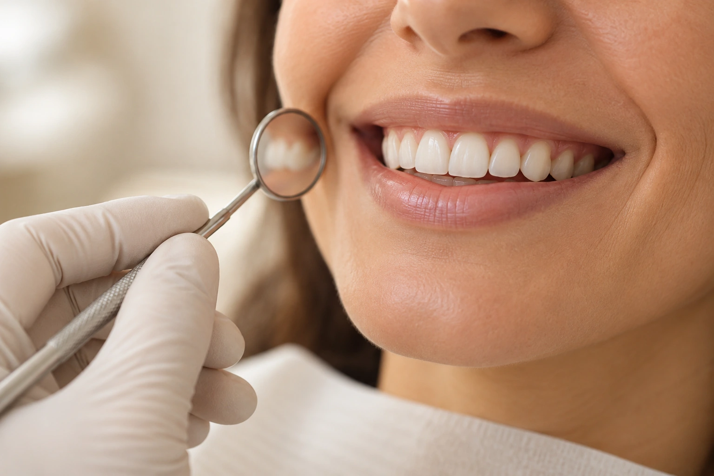

Antes de pensar na cor
Converse sobre o que deseja mudar e como percebe seu sorriso. O clareamento busca alterar a cor dos dentes naturais; a condição dos dentes e das gengivas precisa ser avaliada antes de iniciar.
Restaurações, coroas e próteses não respondem ao clareamento da mesma maneira que dentes naturais. A orientação individual evita expectativas que o procedimento não pode atender.
Informação educativa: NHS — clareamento dental (abre em nova aba). O conteúdo não define uma indicação individual nem o protocolo do consultório.
Perguntas para levar à consulta
- Qual é o objetivo possível no meu caso?
- Há alguma condição que precisa ser cuidada antes?
- Como será conduzido o acompanhamento e quais cuidados serão necessários?
- Qual é o custo do plano e o que está incluído?
Técnica, indicação e condições devem ser esclarecidas na avaliação individual.
Sobre clareamento
O resultado é igual para todas as pessoas?
Não. A condição inicial e a avaliação individual orientam as possibilidades de cada pessoa.
Pode haver sensibilidade?
O clareamento pode causar sensibilidade e irritação temporária. Converse com a profissional sobre os riscos e os cuidados adequados ao seu caso.
Posso começar sem uma avaliação?
A condição dos dentes e gengivas deve ser verificada por um profissional antes de iniciar. Procure orientação para decidir sobre a indicação.